今天的技术版图上有三件事同时发生：模型开始自己操作电脑，芯片开始向上「折叠」以绕开工艺瓶颈，而基因治疗第一次让患者不必再反复输血。三条线索分属软件、硬件与生命科学，指向的却是同一个动作——当旧路走到尽头，就换一条路走。天上也在同步热闹：海上移动发射一箭九星，把发射台搬上了船；一台新望远镜的视野将是哈勃的一百倍。土星南极冒出的十边形、星际彗星里异常浓的甲醇，则提醒我们宇宙的多样远超日常经验。这个九月的清晨，我们把目光放在那些安静但决定性的转折上。
如果把今天这二十条动态收拢成一句话，那就是：当旧路走到尽头，最聪明的做法是换一条路走。
第一条暗线是软件开始「自己动手」。GPT-6 Astra 最值得注意的不是分数，而是它被设计成能直接操作电脑与浏览器；一年之内，人形机器人在 400 米赛道上把成绩缩短了近五十秒，靠的是自己用视觉判断路况、自主调整步态。两者指向同一件事：人工智能的下一步不是更会说话，而是更会做事。与此同时，调用成本上升、推理过程更难监控，也在提醒我们——能力与可控性必须同步推进，任何一头掉队都会让优势变成隐患。
第二条暗线是硬件选择「绕行」。华为用垂直堆叠的折叠架构换取晶体管密度与能效，图灵量子则用一块薄膜铌酸锂芯片把量子计算推到万光子级：一个向上堆叠，一个改换物理载体，共同点是不再死磕同一条赛道。当制程微缩逼近物理极限，创新的重心就必然从「谁的工艺更细」转向「谁的体系更聪明」。这条逻辑同样适用于能源——当发电端下沉到千家万户的屋顶，当更干净的空气本身就在提升光伏效率，电网要回答的问题也换了题目。
第三条暗线藏在生命与历史里。血友病 B 的基因疗法开出全国首张处方，让「一次治疗、长期受益」从概念走进病房；现货型抗癌 T 细胞则把细胞治疗从量体裁衣变成批量供应。而在更远的尺度上，一根十三万年前的前臂骨、一份冰人奥茨的数字孪生，同样是在用新方法重新读取旧的证据。
三条线索背后还有一个共同的方法论：当直接接触的代价过高时，就用镜像、模型与替代路径去抵达。 数字孪生代替物理接触，折叠架构代替制程微缩，一次给药代替反复治疗。这或许是今天最值得记住的一句判断。
01
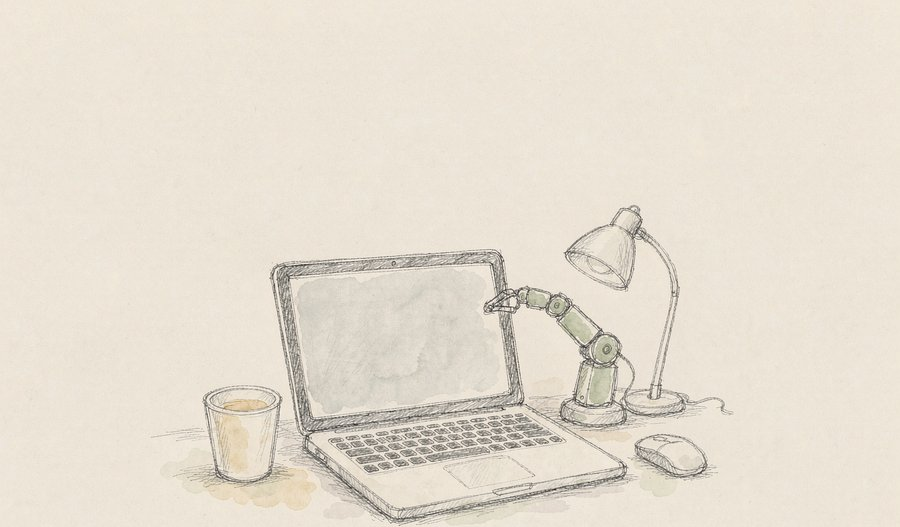
OpenAI 发布新一代旗舰模型 GPT-6 Astra，官方称其为目前智能水平最高、对齐程度最好的模型。与以往不同，这次被反复强调的是它在真实数字环境中的行动力——操作计算机、浏览网页、编写与调试软件、执行网络安全任务与辅助科研，多项基准成绩刷新纪录，其中网络安全一项首次触及最高难度档位。
观此：把「会聊天」升级为「会干活」，是这一代模型最实质的变化。当模型能直接接管鼠标与浏览器，人工智能的产出单位就从「一段回答」变成了「一件完成的工作」。能力越强，定价与监控之间的张力也越明显：官方同时提示推理过程更难追踪、调用成本上升。如何让强能力与可控性同步前进，是这个阶段真正待解的问题。
来源：数智前线
02
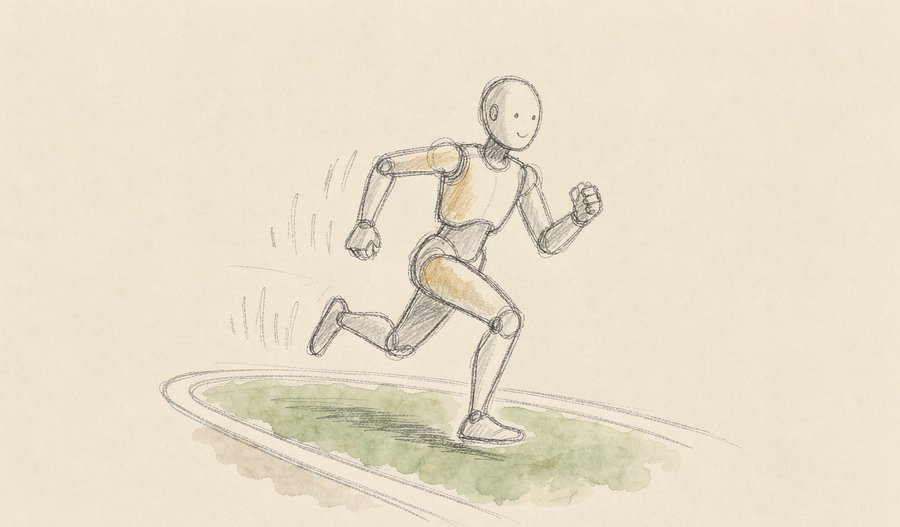
第二届世界人形机器人运动会 400 米大型组比赛中，国产「天工 Ultra」以 38.15 秒夺冠，比一年前的 1 分 28 秒快了近 50 秒。更值得注意的是，参赛机器人已经能够依靠自身视觉识别障碍、自主判断路况并调整步态，不再依赖操作员逐条下发指令。
观此：速度快慢只是表象，真正的变化发生在「感知—判断—迈步」这条闭环上。机器人开始像人一样先用眼睛看、再决定怎么走，这才让它从展台上的表演者变成车间里的劳动者。当奔跑速度接近普通人水平，仓储分拣、柔性搬运这类需要连续移动的场景，落地门槛会明显降低。
来源：数智前线
03
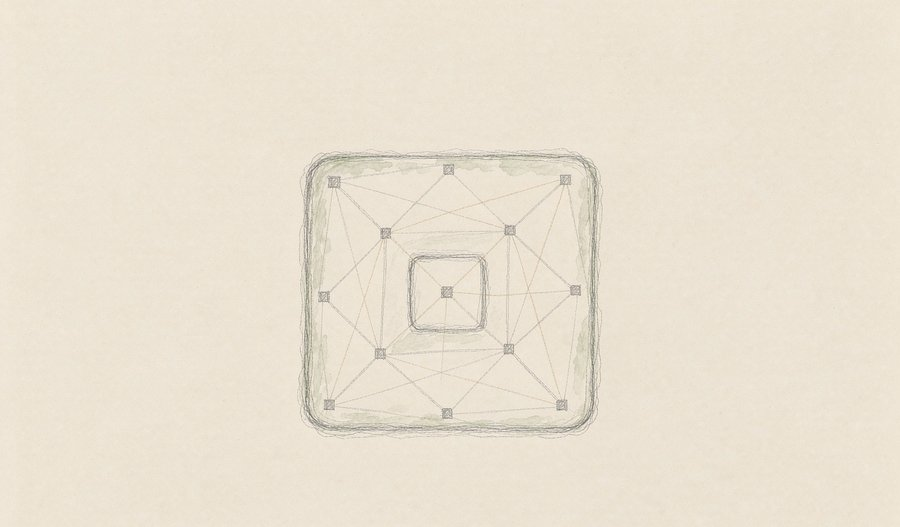
在浦江创新论坛上，图灵量子发布第三代光量子计算机 TuringQ Gen3，核心是一块薄膜铌酸锂芯片，采用空时复用架构把规模推到万光子级。与主流超导路线不同，它用光子充当量子比特，试图摆脱极低温环境的束缚。
观此：量子计算的路线之争长期在超导与离子阱之间拉锯，光量子提供了第三种可能——光子天然适合常温环境，也更容易扩展。它的说服力最终取决于纠错能力与保真度，以及芯片能否稳定量产。路线多元本身是好事，不同物理载体彼此竞争，会逼着整个领域更快逼近实用门槛。
来源：今日头条
04
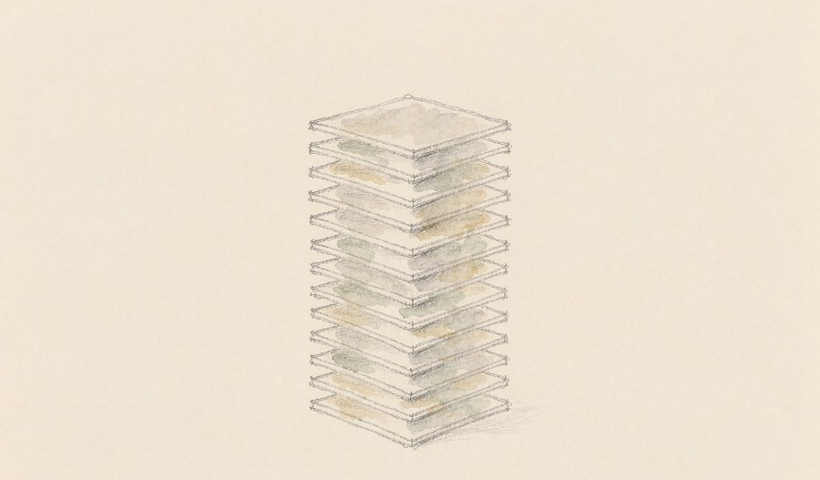
华为公布垂直堆叠的 LogicFolding 芯片架构实测数据，称下一代麒麟处理器在关键负载下晶体管密度可比上一代高出 55%，功耗最多下降 66%。这是一种在难以获取最先进光刻设备时的架构级替代思路，具体表现仍有待第三方独立验证。
观此：当制程微缩逼近物理极限，向上堆叠、重新设计结构，就成了另一条可走的路。这条思路改变的是问题的提法——性能不再只由「纳米数字」决定。如果独立测试能够坐实，过去那种「没有最先进设备就造不出好芯片」的假设，就需要被重新审视。
来源：Brainsharing
05
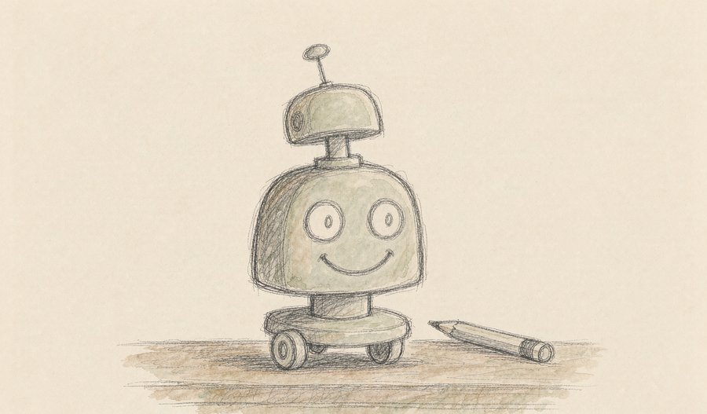
Hugging Face 旗下 Pollen Robotics 推出开源机器人 Microduck，售价约 399 美元（约合人民币 2800 元），在社交平台引发讨论。它延续「小鸭」外形，主打可拆解、可编程、可共享，面向开发者与教学场景。
观此：一边是赛场上的天工 Ultra 不断刷新速度纪录，一边是 399 美元的开源小机器人把门槛拉到桌面级，具身智能正从两端同时生长。开源意味着算法与硬件能够同步被改进，就像当年 DIY 文化之于个人电脑。今天在书桌上被反复拆装的机器人，可能就是几年后产业中坚的起点。
来源：今日头条
06
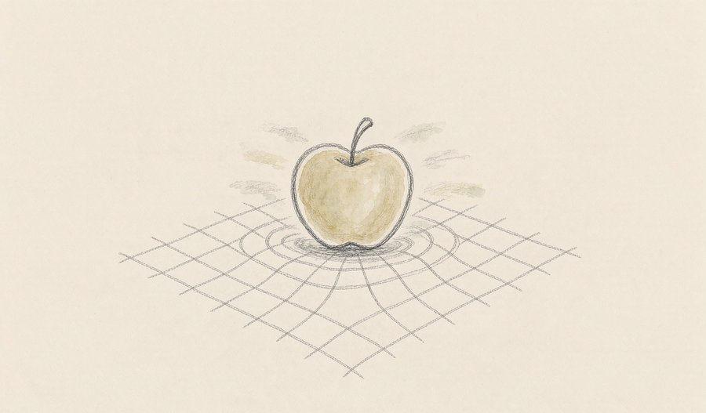
物理学家宣布首次直接观测到一种长期被预见却未被证实的引力量子效应，把一个源自广义相对论的经典概念放到微观量子世界里检验。相关结果被视为把引力理论与量子力学两大支柱拉近的重要一步。
观此：引力的量子化是当代物理学最难啃的骨头之一，此前大多停留在纸面推演。这类实验的价值不在于立刻给出统一理论，而在于第一次提供了可验证的抓手。探索宇宙最深的规律，既需要仰望星空，也需要在桌面级的装置里捕捉最微弱的因果。
来源：ScienceDaily
07
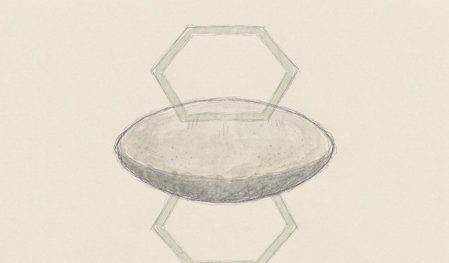
天文学家利用哈勃望远镜的观测数据，在土星南极周边发现一个巨大的十边形大气结构，为这颗行星著名的北极六边形添了一位意料之外的「对称兄弟」。该结构仅在近年积累的数据中显现，说明土星深层环流比原先设想的更复杂。
观此：同一颗星球的两极出现边数不同的稳定多边形涡旋，这对用单一机制解释极区天气的旧模型构成了挑战。规律常以几何的形式浮现，却又各自独立，这正是行星科学迷人的地方。也正因如此，长期持续的空间观测才不可替代——许多现象要等多年数据叠加才会露面。
来源：ScienceDaily
08
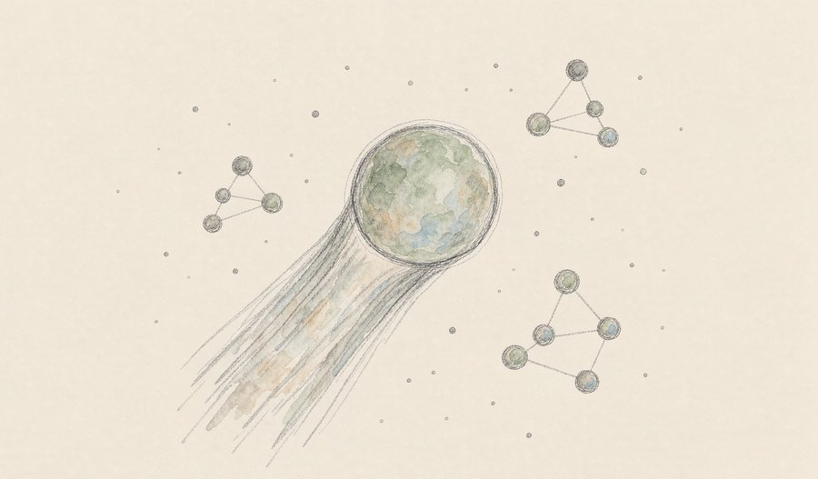
借助 ALMA 射电望远镜，研究人员在星际彗星 3I/ATLAS 上探测到异常高浓度的甲醇，其成分特征显示它形成于与太阳系多数彗星截然不同的环境。这是人类记录到的第三颗造访太阳系的星际天体。
观此：星际天体像漂过门前的宇宙漂流瓶，装着来自其他恒星系统的化学记忆。甲醇异常富集意味着，它诞生时的温度、辐射或原始物质配比都与我们熟悉的环境不同。把「我们从何而来」的追问落回可测量的分子与光谱，是这类观测最实在的贡献。
来源：ScienceDaily
09
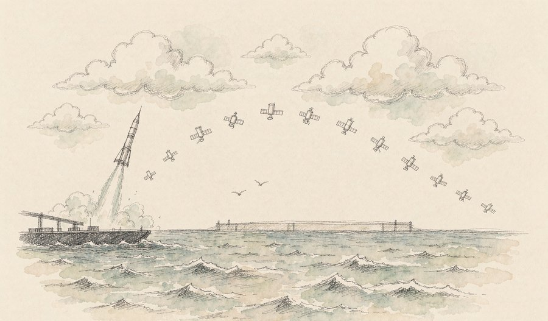
北京时间 9 月 16 日清晨，太原卫星发射中心在东海海域用引力一号遥三火箭，把千帆极轨 26 组 8 颗组网卫星与 1 颗 EUHT 试验卫星共 9 颗送入预定轨道。这是全球首次海上机动发射的低轨宽带互联网星座组网任务，同时刷新了我国单次海上发射的载荷重量与轨道高度纪录。
观此：把发射台搬到船上，意味着发射不再被固定工位与地理位置锁死，可以就近服务巨型星座的组网需求。四次海上发射全部成功、两次之间仅隔 56 天，高频次规模化组网正在从设想变成工程常态。规划中的可复用型号一旦到位，进出空间的成本还有继续下探的空间。
来源：腾讯新闻
10
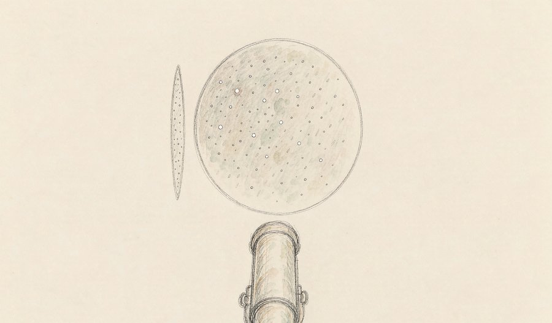
NASA 的罗曼空间望远镜已完成封装，接近发射状态。它在保持哈勃级细节分辨能力的同时，拥有比哈勃大 100 倍的视场，可一次性覆盖广阔天区，任务目标包括搜寻数千颗系外行星与研究暗能量。
观此：望远镜的价值不只看「看得多清」，也看「看得多广」。100 倍视场意味着巡天效率的数量级跃升，把「一颗一颗找」变成「成片成片筛」。当这样的平台入轨，人类对系外行星的统计认知与对暗能量的约束能力，都会整体上一个台阶。
来源：ScienceDaily
11
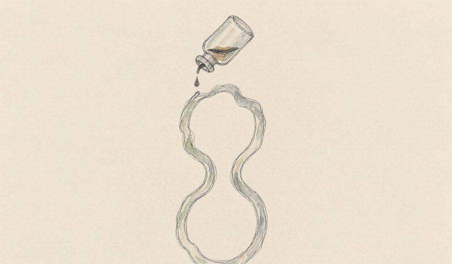
9 月 11 日，用于治疗中重度血友病 B 的波哌达可基注射液在天津开出全国首张处方。这是我国首个获批上市的腺相关病毒（AAV）载体基因替代疗法，患者只需一次静脉输注，就能让身体持续自主合成凝血因子Ⅸ，把凝血水平稳定维持在安全区间。
观此：从「按需注射」到「一次治疗、长期受益」，基因疗法改写的是慢病管理的基本逻辑。它的另一重意义在于可及性探索——首张处方同步配套了患者援助、多元支付与疗效保险，说明前沿疗法的落地从来不只是技术问题。技术跨过门槛之后，如何让需要的人用得上，是同样重要的下一道题。
来源：百度百科
12
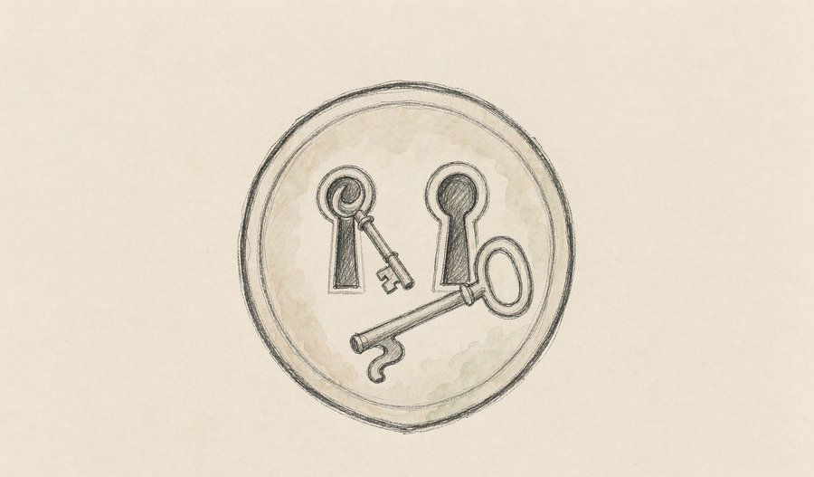
GSK 宣布将于 2026 年 9 月启动其实验性 mRNA 季节性流感疫苗的三期临床试验。二期数据显示其免疫应答强于已上市的对照疫苗；该候选疫苗同时针对血凝素（HA）与神经氨酸酶（NA）两种抗原，是晚期 mRNA 流感疫苗中首个采用双抗原设计的。
观此：现有流感疫苗大多只针对血凝素，且必须每年重配毒株，保护面偏窄。双抗原设计相当于给免疫系统上了双保险，覆盖面更宽。mRNA 技术经新冠一役验证后，正在从应急工具转为常规传染病防控手段，若三期顺利，流感季的防御逻辑会被改写。
13
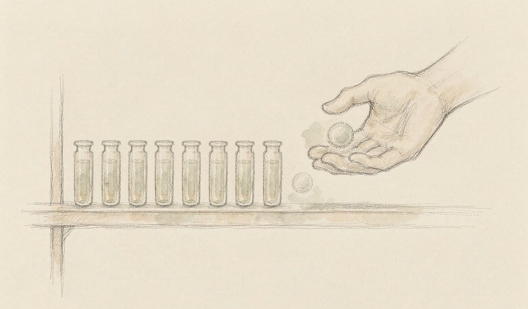
UCLA 团队开发出由脐带血干细胞制成的「现货型」抗癌 T 细胞，依靠两套独立识别系统攻击实体瘤。小鼠实验中，单剂给药即可控制肿瘤并延长生存期，同时避开了传统 CAR-T 需要从患者体内逐一提取细胞、耗时长且费用高的瓶颈。
观此：自体 CAR-T 像量体裁衣的高级裁缝，疗效好却难以规模化；现货型产品则像成衣生产线，随时可取、批量可用。以脐带血为起点，还绕开了细胞来源稀缺的现实约束。若临床转化顺利，实体瘤治疗的可及性会有明显改善。
来源：ScienceDaily
14
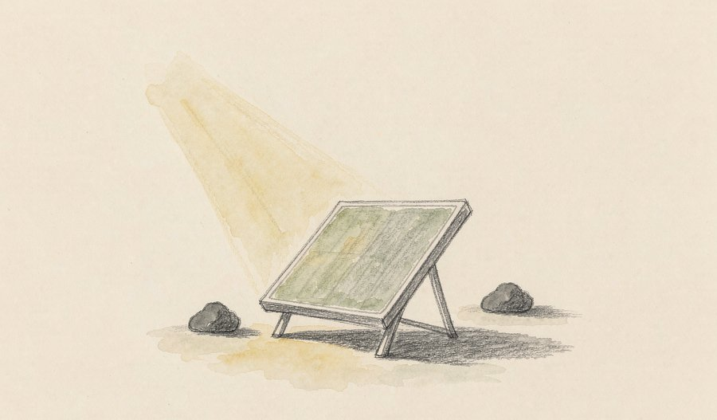
清华大学环境学院团队把能源、气象与光伏模型耦合起来测算发现，在侧重风光部署的碳中和路径下，空气质量改善会让 2060 年全国光伏年发电量较基准情景增加约 5.75 万 GWh，对应收益约每年 51.8 亿美元。增益中约四分之三来自气溶胶与云的相互作用对地表辐射的增强，而不只是气溶胶直接散射的功劳。
观此：这是一个长期被低估的协同红利——治污与发电并非此消彼长，空气变干净本身就在提升光伏的效率。研究还提示，这部分增益的量级已经可以与组件技术进步相提并论。换句话说，「少排一点」本身就是一种技术进步。
来源：今日头条
15
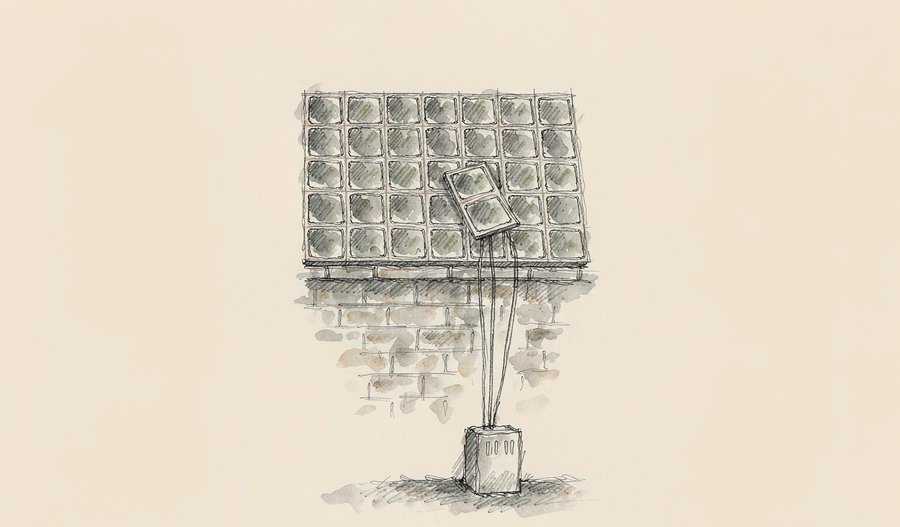
澳大利亚南澳州的屋顶光伏近期创下冬季纪录，满足了全州 99.9% 的电力需求，配套电池以高于平均的速率充电，把过剩绿电吸收下来。该州家庭光伏渗透率约 41%，位居全球前列，国家能源市场也同步刷新了冬季最低运行需求纪录。
观此：「屋顶即电厂」已经从设想变为运营现实，说明高比例分布式光伏有能力支撑区域电网的主体负荷。发电端下沉到千家万户之后，真正的考验转移到调度端——储能与智能电网要回答的是，如何在连续阴雨的日子里依然稳住供电。能源转型的下半场，比拼的是电网的弹性。
16
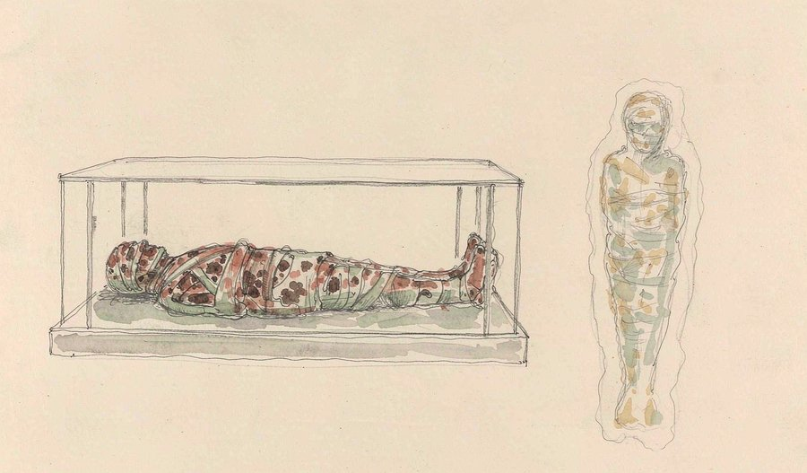
南蒂罗尔考古博物馆牵头，研究团队为冰人奥茨制作了首个数字孪生模型：第一次把木乃伊体表的高分辨率影像与体内 CT 数据合并进同一个三维模型。研究者可以虚拟地查看表面与内部结构、进行测量，并从任意切面探索，人工智能还被用于捕捉熊皮帽的复杂构造。成果已发表于《Heritage》期刊。
观此：对脆弱文物的研究长期受制于「要看就得动」的两难，数字孪生让保护与研究第一次不再对立。定期重建孪生模型，还能捕捉最细微的劣化迹象，相当于给文物建立一份持续更新的健康档案。用数字镜像代替物理接触，正在成为文博领域的通用方法。
来源：南蒂罗尔考古博物馆
17
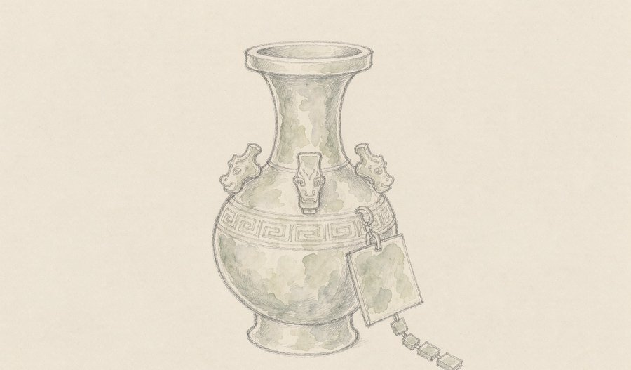
在 2026 年服贸会北京文博展区，高精度显微采集设备可在约 3 分钟内完成文物整体样貌与微观纹理特征的采集，数据按国际标准写入区块链，实现永久存证、全程可追溯。配合 AI 智能眼镜与讲解机器人，观众还能获得专属的文物解读。
观此：区块链不可篡改的特性，正好对上文物与艺术品流转中最痛的真伪与溯源问题——特征数据与文物终身绑定。这与奥茨的数字孪生一脉相承：把实体资产映射为可信的数字资产。当文博遇上智能眼镜与机器人，静态的展柜开始转向「可对话、可验证」的体验。
来源：今日头条
18
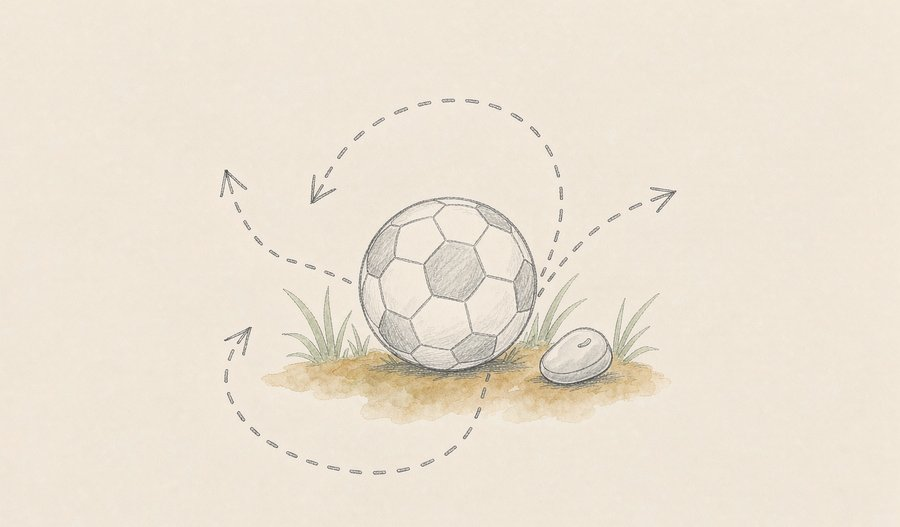
9 月 12 日，2026 羽毛球与足球项目运动表现跨学科前沿国际学术论坛在广州体育学院开幕，中外专家围绕智能训练技术展开交流。与会学者指出，人工智能与数字孪生将推动足球科研从数据采集阶段迈向精准决策；运动生物力学研究则揭示了动作机制与损伤风险之间的联系，高原低氧训练也在走向个体化。
观此：竞技体育的胜负越来越取决于「数据到决策」的转化速度，这与模型开始自主操作电脑、机器人开源教育形成呼应——人工智能正渗透从顶尖赛场到启蒙课堂的每一层。数字孪生让教练可以在虚拟空间里预演战术、减少运动员的身体损耗，「以虚辅实」成了多个领域共享的方法论。
来源：腾讯新闻
19
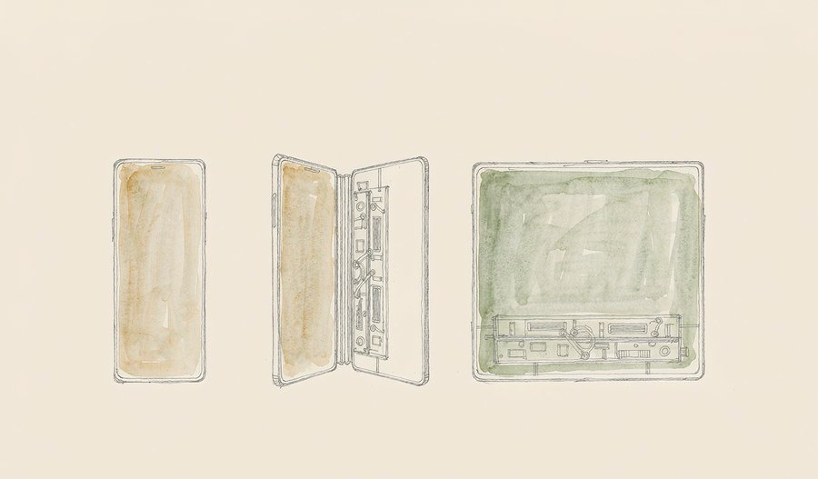
在 2026 年秋季发布会上，苹果推出首款折叠屏手机 iPhone Duo，采用横向「书本式」折叠设计，内屏 7.6 英寸、外屏 5.4 英寸，搭载 A20 Pro 芯片，256GB 版本售价 15999 元，将于 10 月 23 日发售。同期，多家国产厂商也密集发布了折叠屏与 AI 新机。
观此：折叠屏从安卓阵营的尝鲜形态，变成了全行业共同押注的主流方案，消费电子由此进入以「形态创新」推动换机的新周期。硬件竞争的焦点，也从单一参数比拼，转向结构、芯片、系统与跨设备体验的综合表现。当头部厂商站上同一条赛道，真正的分水岭在于谁能把折叠做得更像一部正常手机。
来源：今日头条
20
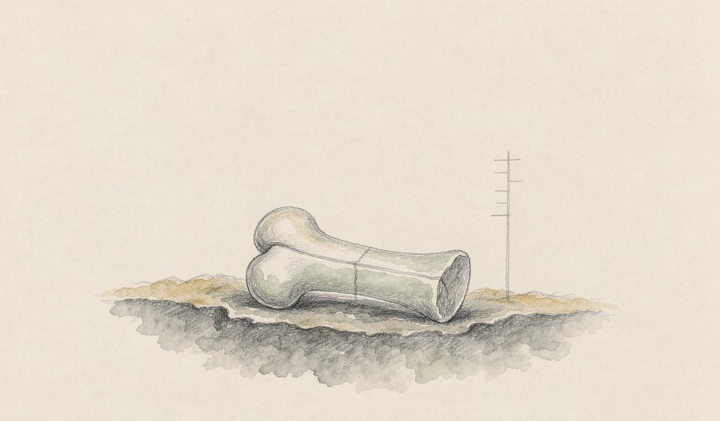
中国科学院等机构的研究团队在云南鹤庆蝙蝠洞遗址发现了距今约 13.4 万至 16.7 万年的丹尼索瓦人化石，其中包括一件前臂桡骨——这是中国西南地区首次发现丹尼索瓦人肢骨。研究通过「形态初筛＋古蛋白分析」的组合方法，从 6 万余件骨片中锁定了 3 件标本，成果发表于《自然》。
观此：丹尼索瓦人过去多只靠牙齿与碎颅骨「露面」，这根桡骨第一次提供了肢体层面的实体线索，提示他们的运动方式可能与尼安德特人、现代人各有不同。它也说明，沉睡的证据需要新方法才能被唤醒——古蛋白组学与人工智能筛选，正在成为考古的常规工具。西南地区这块拼图落位，为理解东南亚与大洋洲人群的古老基因来源提供了关键节点。
来源：中新网
今天的三条暗线都指向同一个动作——换路。软件层面，模型从「会回答」走向「会操作」，机器人从听指令走向自己判断；硬件层面，芯片与能源在工艺极限之外寻找新的结构与新的载体；生命科学层面，治疗从反复给药转向一次性的修复。文化与人文学科给出了同构的信号：当物理接触的代价过高，数字镜像就成了抵达真相的另一条桥。明天，这些新路会继续向前延伸。
内容仅供资讯参考，综合自公开报道，观点为本刊原创解读。
本文插画由 AI 辅助绘制。